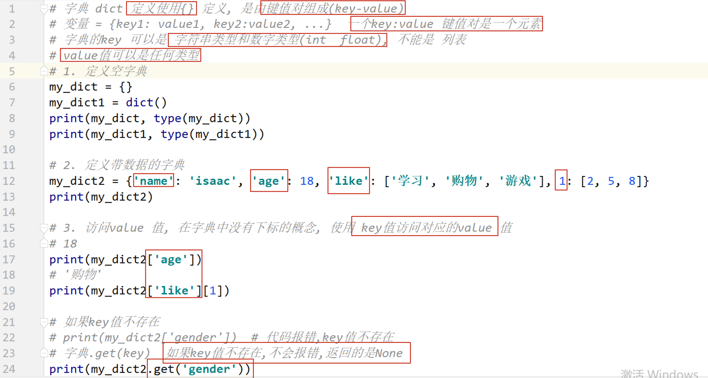

Day04 课堂笔记
0. 复习反馈
2. 字典
2.1 字典的定义和访问


2.2 字典中添加和修改数据

2.3 字典中删除数据

2.4 字典中遍历数据
1. for 循环直接遍历字典, 遍历的是字典的 key 值

2. 字典.keys()

3. 字典.values()

4. 字典.items()

2.5 enumerate 函数

2.6 公共方法
+支持 字符串、列表、元组进行操作， 得到一个新的容器* 整数复制， 支持 字符串、列表、元组进行操作， 得到一个新的容器in/not in判断存在或者是不存在，支持 字符串、列表、元组、字典进行操作， 注意： 如果是字典的话，判断的是 key 值是否存在或不存在
max/min对于字典来说，比较的字典的 key值的大小
总结答疑
x11. 在字典中可以包含列表，列表中能包含字典吗？2可以的， 列表 元组可以存放任意类型的数据，同样，字典中的 valu也可以是任意的类型，字典也可以作为字典的 value 值。
函数
xxxxxxxxxx11print() 打印输出2input() 输入3len() 求容器长度的4...5函数可以实现一个具体的功能函数的定义和调用

函数的文档说明

书写带参数的函数
好处： 可以使函数代码更加通用，适用更多的场景

局部变量
x
1局部变量的作用域（作用范围）： 当前函数的内部2局部变量的生存周期：在函数调用的时候被创建，函数调用结束之后，被销毁（删除）34局部变量只能在当前函数的内部使用，不能在函数的外部使用。

全局变量
xxxxxxxxxx11全局变量： 就是在函数外部定义的变量。2在函数内部可以访问全局变量的值，如果想要修改全局变量的值，需要使用 global 关键字声明
返回值
xxxxxxxxxx11在函数中定义的局部变量，或者通过计算得出的局部变量， 想要在函数外部访问和使用，此时就可以使用 return 关键字，将这个返回值返回
return 返回多个数据值
xxxxxxxxxx111. 程序代码遇到一个 return 之后，后续的代码不再执行
xxxxxxxxxx11011. return 关键字后边可以不写数据值， 默认返回 None2def func():3 xxx4 return # 返回 None，终止函数的运行的562. 函数可以不写 return，返回值默认是 None78def func():9 xxx10 pass111213